Physics, King’s College London, The Strand, London, WC2R 2LS, United Kingdom
The pdf file of this manual can be downloaded from here .
The code itself is available for download here . The last update: 13 October 2014 .
Motivated by the need to aid in the interpretation of experimental Atomic Force Microscopy (AFM) images, this code was developed to self-consistently calculate the interaction between a tip and surface, and then use this interaction in running a virtual AFM machine that simulates a real experimetal device. This may be time consuming. However, we believe this must be the option of choice in simulations that involve heavily the response of the probe on the surface species, e.g. during manipulation experiments. As far as we are aware, this is the most advanced AFM simulating tool today.
The code can be run in three regimes:
The Sci-Fi part of the code has the facility to perform many different types of calculations on a tip-surface set up. The program can either be used to find the minimum energy configuration of a given system using powerful minimisation algorithms, or perform a finite temperature Molecular Dynamics (MD) simulation in a number of different ensembles.
Microscopic systems can be composed of a variety of different classical potentials and the program has the facility to implement atomic polarisation via the shell model, where pairwise interactions are modeled by a series of Buckingham style potentials. The modeling of covalent crystals and organic molecules is possible by the use of many-body potentials which comprise of bond, angle, torsion and out-of-plane interactions. Some (or all) can also interact via Tersoff-like potential. All types of interaction (pairwise, manybody and Tersoff) can be combined, i.e. all atoms of the system can be split into a set of Tersoff-like atoms, many-body atoms and the rest which interact between themselves and with the Tersoff and manybody atoms via a pairwise interaction.
The AFM functionality is facilitated via a number of ways. In the simplest ones, a user can simply specify how the tip moves (e.g. vertical oscillation or a linear displacement along a certain direction). The tip is moved in small steps, and at each step the atomic system is either allowed to relax or moves according to Newtonian equations of motion, i.e. a MD calculation is performed (a non-equilibrium MD).
A new powerful feature, a vAFM, has been recently added. It is designed for simulating the work of electronics of an actual Non-Contact AFM device. If this functionality is on, then the movement of the tip is controlled by equations simulating electronics of an actual AFM apparatus. In this case, the tip can be moved in a number of ways, e.g. by performing a 2D scan.
The calculation resembles an actual run of an experimental device: it starts by stabilising the cantilever, then the tip approaches the surface (e.g. by trying to match the frequency change setpoint) and makes a scan. To make the simulation as general as possible, it is split into elementary calculations associated with elementary cantilever movements called stages. For instance, a single approach to a preset frequency shift is a single stage; a scan along a certain direction keeping the frequency shift and the velocity is also an elementary stage. A more complex tip movement can always be programed as a set of elementary stages, e.g. a 2D scan can be constructed as a set of forward and backward line scans along two perpendicular directions.
When the SciFi and the vAFM work together, the full geometry optimisation in the junction and hence the calculation of the tip force is performed only when the tip is sufficiently close to the surface. At larger distances, a supplied analytical expression for the tip force is used. This speeds up the calculation enormously. In addition, the following “learning” feature is also implemented: if the lateral position of the tip does not change appreciably, the calculated force field is recorded, and interpolation of the force is made for a tip vertical position that lies between two known (already calculated) positions.
The whole code has been designed to run efficiently on both serial and distributed memory multi-processor machines with Fortran 77 or 90 compilers. In parallel the program uses the Message Passing Interface (MPI) set of communication routines and is parallised according to the distributed memory paradigm with atomic pair decomposition. At present, the code only works in parallel when vAFM option is switched off. This will be rectified shortly.
Usually, the theoretical interpretation of AFM images is based on simple models in which the force imposed on the tip originates from the macroscopic long-range Van-der-Waals interaction and a microscopic interaction described using pair potentials between atoms simulating the tip apex and atoms of the sample. In this model only the direct electrostatic interaction between atoms of the tip apex and the sample is accounted for. However, the theoretical model used here takes account of the polarization of the conducting electrodes (i.e. of the tip and the substrate) by the charged atoms of the sample. This is important for any tip-surface (or just surface) setup containing conducting materials e.g. interaction of a conducting tip with an insulating surface or studying the properties of an insulating thin film on top of a metal substrate.
The potential on conducting electrodes is maintained by external sources (i.e. by the “battery”). From the point of view of classical electrostatics the polarization of the conductors by external charges is caused by the additional potential on the conductors due to the charges. This extra potential is compensated by a charge flow from one electrode to another to keep the potential on the conductors fixed. This work is done by the battery. As a result, there will be some distribution of the net charge on the surfaces of conductors induced by the point charges situated in the free space between them. The net charge on each conducting electrode would interact with the total charge on other conductors and with the point charges. Hereafter this interaction is called the image interaction. A detailed discussion of the derivation and application of the image interaction to AFM systems can be found in refs. [1] and [2].
|
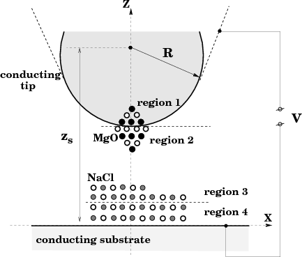
|
The program itself is designed to calculate the interactions in systems similar to that shown in fig. 1, with an atomistic nano-tip embedded in a conducting macroscopic sphere interacting with an atomistic cluster on top of a metal substrate. This represents a very common experimental setup in modern AFM experiments using conducting tips to image thin insulating films on top of metal substrates. However, the code is very flexible in the types of setup it can study. The properties of insulating tips can be easily investigated by removing the conducting sphere from the system, and in fact the properties of thin films alone can be studied by removing the tip completely from the system. Some example input files at the end of this manual show the variety of different setups that can be studied.
Consider a set of finite metallic conductors of arbitrary shape and an arbitrary distribution of point charges {qi} at the points {ri} anywhere in the free space outside the conductors. We assume that the conductors which will hereafter be designated by indices m,m′ are kept at some fixed potentials φm. These potentials are provided by the batteries.
It is known from the standard textbooks (see e.g. Refs. [3], [4], [5]) how to calculate the energy accumulated in the electrostatic field E created by point charges and metals. Using the total energy of the field, U =
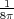
∫ V E2dr (the integral is taken over the volume V outside the metals since inside those the field E = 0) and applying the Poisson equation for the field, one gets:|
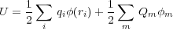 | (1) |
where the first sum is taken over all point charges whereas the second one over all conductors. Qm = -
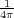
∫ ∫ Sm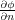
ds is the charge on the metal m, where the integral is performed over the surface Sm of the metal. Note that the surface integral over a remote surface at infinity (which is surrounding all the metals and the point charges) vanishes due to rapid decrease of the potential to zero there [4]. Therefore, this derivation is not valid for infinite metals for which this assumption is not correct (e.g. a charged infinite metal conductor). We also note in passing that according to classical theory, the charge is distributed at the surface, i.e. it does not penetrate into the bulk of the metal; quantum theory [6], [7], [8] gives a certain distribution of the surface charge in the direction to the bulk.The result of Eq. (1) has a very simple physical meaning: every charge q at the point rq (either a point charge outside the metals or the distributed charge on a metal surface) gets energy qφ(rq) where the factor is needed to avoid double counting. Note that the potential φ(r) is produced both by the metals (i.e. by the distributed charges on their surfaces) and by the point charges. Note also that both the potential φ(ri) on point charges and the charges Qm on the metals are unknown and should be calculated by solving the Poisson equation. The effect of the metals comes into play via the boundary conditions and the charges Qm.
In order to calculate the electrostatic force imposed on any of the conductors, we use the method essentially similar to the one of Ref. [4] where an arbitrary distribution of metals is considered without point charges. The force is obtained by differentiating the energy with respect to the corresponding position of the metal of interest. It is shown in Ref. [4] that the same expression for the force is obtained in the cases of fixed potentials or fixed charges on the metals. This, however, is not the case if the point charges are present. Indeed, let us move some metal by the vector δr. The work δA = -Fδr is done by the external force against the force F imposed on the conductor. When the conductor is moved to the new position, the potential φ(r) in the system will change by δφ(r). The potential on any metal m will no longer be equal to the fixed value φm so that there should be some charge flow between the connected conductors to maintain the potential on them. Therefore, some work δA will be spent in changing the potential energy of the field (given by Eq. (1)) by the amount
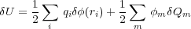
and some work δAb is done in transfering charge between the conductors. The latter work δAb is done by the batteries (as the charge flows via the battery from one conductor to another) and so should be taken with the minus sign: δA = -δAb + δU. Alternatively, one could think of the batteries being incorporated into the system; in that case it would mean that the work done by the batteries would reduce the total potential energy of the whole system.
Let δQm be the change of the charge on the conductor m in the discussing process. Then the work δAb = ∑ mφmδQm (cf. Eq. (2.5) in Ref. [4]). Indeed, since ∑ mδQm = 0, this is the work needed to distribute the zero charge initially stored at infinity (where the potential is zero) between different metals by transferring the amounts δQm to the each metal m. Using the above given expressions, we obtain:
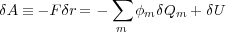
so that the final expression for the force imposed on the displaced metal becomes
|
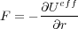 | (2) |
with the effective energy (or the total potential energy of the whole system which includes the batteries as well) defined as:
|
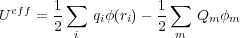 | (3) |
In order to calculate the force imposed on the tip we used the following expression for the total energy of the system:
|
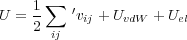 | (4) |
where vij is the interatomic potential between atoms i,j. This interaction energy is a function of both the tip position zs and the coordinates ri of all atoms (and shells) involved. The energy UvdW represents the van der Waals interaction between the macroscopic tip and substrate and depends only on the tip height zs with respect to the substrate (see Fig. 1). Note that in the present model the macroscopic van der Waals interaction does not effect atomic positions.
The last term in Eq. (4) represents the total electrostatic energy of the whole system. We assume that the Coulomb and covalent interactions between all atoms is included in the first term in Eq. (4) and hence should be excluded from Uel. Therefore, the energy Uel includes the interaction of the atoms in the system with the macroscopic tip and substrate. As has been demonstrated, the correct electrostatic energy should incorporate the work done by the battery to maintain the constant potential on the electrodes. It can be written in the following form:
|
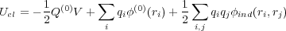 | (5) |
Here V is the potential difference applied to the metal electrodes. Without loss of generality, one can choose the potential φ on the metal plane to be zero, so that the potential on the macroscopic part of the tip will be φ = V . We also note that the substrate is considered in the limit of a sphere of a very big radius R′≫ R since the metal electrodes formally cannot be infinite. The charge on the tip without charges outside the metals (i.e. when there are only bare electrodes and the polarization effects can be neglected) is Q(0) and the electrostatic potential of the bare electrodes anywhere outside the metals is φ(0)(r). The charge Q(0) and the potential φ(0)(r) depend only on the geometry of the capacitor formed by the two electrodes and on the bias V . The charge Q(0) can be calculated from the potential φ(0)(r) as follows [4]: Q(0) = -
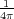
∫ ∫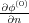
ds where the integration is performed over the entire surface of the macroscopic part of the tip with the integrand being the normal derivative of the potential φ(0)(r); the normal n is directed outside the metal. Summation in the second term of Eq. (5) is performed over the atoms and shells of the sample and those of the tip apex which are represented by point charges qi at positions ri.Finally, φind(r,r′) in Eq. (5) is the potential at r due to image charges induced on all the metals by a unit point charge at r′. This function is directly related to the Green function G(r,r′) of the Laplace equation, φind(r,r′) = G(r,r′) -
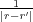
, and is symmetric, i.e. φind(r,r′) = φind(r′,r), due to the symmetry of the Green function itself [5]. The total potential at r due to a net charge induced on all conductors present in the system by all the point charges {qi},|
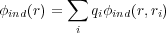 | (6) |
is the image potential. Note that the last double summation in Eq. (5) includes the i = j term as well. This term corresponds to the interaction of the charge qi with its own polarization (similar to the polaronic effect in solid-state physics).
The function φind(r,r′) and, therefore, the image potential, φind(r), together with the potential φ(0)(r) of the bare electrodes could be calculated if we knew the exact Green function of the electrostatic problem
|
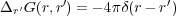 | (7) |
with the corresponding boundary conditions (G(r,r′) = 0 when r or r′ belong to either the substrate or the tip surface) [5]. Therefore, given the applied bias V , the geometric characteristics of the capacitor and the positions {rj} of the point charges {qi} between the tip and sample, one can calculate the electrostatic energy Uel. The problem is that the Green function for real tip-sample shapes and arrangements is difficult to calculate. In this study we use the planar-spherical geometry of the junction as depicted in Fig. 1.
First, let us consider the calculation of the potential φ(0)(r) of the bare electrodes, i.e. the capacitor problem. We note that the potential φ(0)(r) satisfies the same boundary conditions as the original problem, i.e. φ(0) = 0 and φ(0) = V at the lower and upper electrodes, respectively. The solution for the plane-spherical capacitor is well known [9] and can be given using the method of image charges. Since we will need this solution for calculating forces later on, we have to give it here in detail. It is convenient to choose the coordinate system as shown in Fig. 1. Then it is easy to check that the following two infinite sequences of image charges give the potential at the sphere and the metal plane as V and zero respectively. The first sequence is given by the image charges ς1 = RV and then ςk+1 =
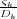
for ∀k = 1,2,…, where the dimensionless constants Dk are defined by the recurrence relation Dk+1 = 2λ -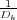
with D1 = 2λ and λ =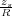
> 1, zs being the distance between the sphere centre and the plane (Fig. 1). The point charges {ςk} are all inside the sphere along the normal line passing through the sphere centre. Their z-coordinates are as follows: z1 = zs and zk+1 = R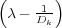
= R(Dk+1 - λ) for ∀k = 1,2,…. The second sequence of charges {ςk′} is formed by the images of the first sequence with respect to the metal plane, i.e. ςk′ = -ςk and zk′ = -zk. An interesting point about the image charges {ςk} is that they converge very quickly at the point z∞ = R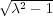
(i.e. zk → z∞ with k →∞) and that zk+1 < zk for ∀k. This is because the numbers Dk converge rapidly to the limiting value D∞ = λ +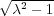
which follows from the original recurrent relation above, D∞ = 2λ -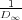
. Therefore, while calculating the potential φ(0)(r), one can consider the charges {ςk} and {ςk′} explicitly only up to some k = k0 - 1 and then sum up the rest of the charges to infinity analytically to obtain the effective charge ς∞ = ∑ k=k0∞ςk = ∑ n=0∞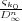
=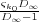
to be placed at z∞. This can be used instead of the rest of the series:|
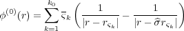 | (8) |
where ςk = ςk for k < k0 and ςk0 = ς∞; then, rςk = (0,0,zk) is the position vector of the charge ςk and rςk′ =
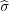
rςk = (0,0,-zk) is the position of the charge ςk′ ( means reflection with respect to the substrate surface z = 0). To find the charge Q(0) which is also needed for the calculation of the electrostatic energy, Eq. (5), one should calculate the normal derivative of the potential φ(0)(r) on the sphere and then take the corresponding surface integral (see above). However, it is useful to recall that the total charge induced on the metal sphere due to an external charge is equal exactly to the image charge inside the sphere [4], [5]. Therefore, one immediately obtains:|
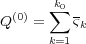 | (9) |
Note that the potential φ(0)(r) and the charge Q(0) depend on the position zs of the sphere indirectly via the charges ςk and their positions rςk according to the recurrent expressions above. Therefore, one has to be careful when calculating the contribution to the force imposed on the tip due to bias V (i.e. when differentiating φ(0)(r) and Q(0) in Eq. (5)).
Now we turn to the calculation of the function φind(r,r′) in Eq. (5). This function corresponds to the image potential at a point r due to a unit charge at r′. This potential is to be defined in such a way that together with the direct potential of the unit point charge, it should be zero on both electrodes (the boundary condition for the Green function). Thus, let us consider a unit charge q = 1 at rq somewhere outside the metal electrodes as shown in Fig. 2.
|
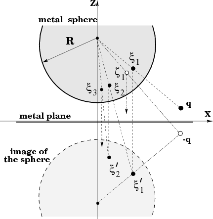
|
We first create the direct image -q of this charge with respect to the plane at the point rq′ = rq to maintain zero potential at the plane. Then, we create images of the two charges, q = 1 and -q = -1, with respect to the sphere to get two image charges ξ1 = -
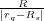
and ζ1 =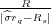
, as shown in Fig. 2 where Rs = (0,0,zs). These image charges are both inside the sphere by construction and their positions can be written down using a vector function f(r) = Rs + R2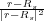
as follows: rξ1 = f(rq) and rζ1 = f(rq). Now the potential at the surface will be zero. At the next step we construct the images ξ1′ = -ξ1 and ζ1′ = -ζ1 of the charges ξ1 and ζ1 in the plane at points rξ1 and rζ1 respectively, to get the potential at the plane also zero. This process is continued and in this way two infinite sequences of image charges are constructed, which are given by the following recurrence relations:|
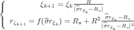 | (10) |
where k = 1,2,… and similarly for the ζ-sequence. Note, however, that the two sequences start from different initial charges. Namely, the ξ-sequence starts from the original charge q while the ζ-sequence from its image in the plane -q. The two sequences {ξk} and {ζk} are to be accompanied by the other two sequences {ξk′} and {ζk′} which are the images of the former charges with respect to the plane. The four sequences of the image charges and the charges q and -q provide the correct solution for the problem formulated above since they produce the potential which is the solution of the corresponding Poisson equation and, at the same time, is zero both on the metal sphere and the metal plane.
It is useful to study the convergence properties of the sequences of image charges. To simplify the notations, let us assume that the original charge is in the xz-plane. Then it follows from Eq. (10) that xξk+1 < xξk . It is also seen that xξk → 0 and zξk → z∞ = R
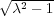
(see above) as k →∞ and the same for the ζ-sequence. This means that the image charges inside the sphere move towards the vertical line passing through the centre of the sphere and finally converge at the same point z∞. This is the same behaviour we observed for charges in the capacitor problem at the beginning of this subsection (see Fig. 2). In fact, the calculation clearly shows a very fast convergence so that we can again sum up the series of charges from some k = k0. Thus, the image potential at a point r due to the unit charge at rq is:|
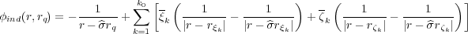 | (11) |
where ξk = ξk for k < k0 and ξk0 = ξ∞ = ξk0
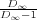
, and similarly for the ζ-sequence. Here D∞ is the geometrical characteristic of the capacitor introduced at the beginning of this subsection.As it has been already mentioned in Section 2.1, the function φind(r,rq) must be symmetric with respect to the permutation of its two variables. It is not at all obvious that this is the case since the meaning of its two arguments in Eq. (11) is rather different. Nevertheless, we show in ref. [2] that the function φind(r,rq) is symmetric.
In order to calculate the total force acting on the tip, one has to differentiate the total energy, Eq. (4), with respect to the position of the sphere, Rs. Since we are interested only in the force acting in the z-direction, it is sufficient to study the dependence of the energy on zs. There will be three contributions to the force. The second contribution to the force comes from the van der Waals interaction [10]. Finally, the interatomic interactions lead to a force which is calculated by differentiating the shell-model energy (the first term in Eq. (4)). Therefore,
|
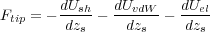 | (12) |
where Ush = ∑ ij ′vij is the shell model energy. We recall that the summation here is performed over all atoms in regions 1 to 4. Only positions of the atoms in region 1 depend directly on zs since atoms in other regions are allowed to relax. However, their equilibrium positions, ri(0), determined by the minimisation of the energy of Eq. (4), will depend indirectly on zs at equilibrium, ri(0) = ri(0)(zs). Then, we also recall that the electrostatic energy, Uel, depends only on positions of atoms, as well as on the tip position zs.
Let us denote the positions of atoms by a vector x = (r1,r2,…). The total energy U = U(x,zs), where the direct dependence on zs comes from relaxed tip atoms of the shell model energy, Ush, and from the electrostatic energy, Uel. In equilibrium the total energy is a minimum:
|
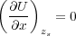 | (13) |
where the derivatives are calculated at a given fixed tip position zs. Let x0 = (r1(0),r2(0),…) be the solution of Eq. (13). Then, since x0 = x0(zs), we have for the force:
|
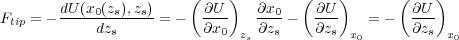 | (14) |
where we have used Eq. (13). This result can be simplified further. Indeed, the partial derivative of the shell-model energy, -
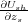
, is equal to the sum of all z-forces acting on atoms in region 1 due to all shell-model interactions, since only these atoms are responsible for the dependence on zs in the energy Ush. Therefore, finally we have:|
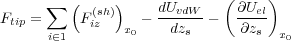 | (15) |
where the first summation runs only over fixed tip atoms. Thus, in order to calculate the force imposed on the tip at a given tip position zs, one has to relax the positions of atoms using the total energy of the system, Ush + Uel. Then calculate the shell-model force, Fiz(sh), acting on every fixed tip atom in the z-direction as well as the electrostatic contribution to the force given by the last term in Eq. (15). The van der Waals force between macroscopic tip and sample does not depend on the geometry of atoms and can be calculated just once for every given zs.
In the case where the system is dynamic and atoms are given kinetic energy, it becomes obvious that the definition of the tip force given in the previous section no longer holds, since the forces on free atoms are no longer zero:
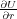
≠0. It is also clear that because of this when the entire tip is far from the surface, region 1 will experience large fluctuations in force of Eq. (14) due to oscillating other tip atoms belonging to the adjacent region 2. Moreover, these fluctuations will not decay with the distance from the surface which is in clear contradiction with what one would expect from the tip force which is physically due to the interaction with the surface. Even for a completely isolated tip the force fluctuations are large although, since region 2 atoms vibrate around equilibrium positions, the average force fluctuates around zero value. Hence, we conclude that the final form of Eq. (14) can only be used for calculating the force in mechanical equilibrium or when calculating the average force during MD simulations. If we are interested in the actual fluctuations of the tip force for any given tip position Q, Eq. (14) cannot be applied.What is needed in order to provide an alternative expression for the tip force which would work for both static and dynamic situations, is the definition of an instantaneous force for arbitrary positions of atoms in the junction. At first, one might be tempted to define the tip force as the partial derivative, -
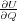
, of the total system energy U with respect to tip height Q at arbitrary positions of atoms, r, which are allowed to relax. However, this definition, as can easily be seen, leads to the same expression for the force, Eq. (14), because only atoms in region 1 depend explicitly on Q, and thus cannot be accepted.In order to obtain an appropriate definition of the tip force, we invoke a general non-equilibrium microscopic consideration in which the total Hamiltonian of the “tip - surface” system was shown [11] to be split as follows:
|
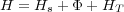 | (16) |
Here Hs is the sum of the independent microscopic Hamiltonians of the isolated surface and the isolated tip. Either of those contains kinetic and potential energies of the constituent atoms. Note that atomic positions in the tip part of Hs are defined relatively to the fixed part of the tip (e.g. using internal coordinates). Note also that there is no interaction between atoms in the surface and in the tip included in Hs. This interaction is completely included in the second term, Φ, in Eq. (16). Since absolute positions of the tip atoms are to be used while specifying the tip-surface interaction, Φ depends both on the atomic positions and the tip height, Q. As the distance between the tip and surface increases, the tip-surface interaction Φ tends to zero. Finally, HT is the macroscopic Hamiltonian of the tip which contains kinetic and elastic energy of the cantilever as well as the excitation term. It depends exclusively on Q and also contributes to the conservative part of the tip force. Since we are not interested in the conservative contribution (it does not contribute to the force fluctuations), it will be ignored in this presentation. Note that the interaction term, Φ can always be defined for arbitrary complex many body interactions between the tip and surface, and thus our treatment is not limited to systems consisting only of pairwise interactions.
It then follows from the microscopic non-equilibrium theory that the instantaneous microscopic force acting on the tip (which completely includes the stochastic contribution due to atomic vibrations [12]) should be defined as follows:
|
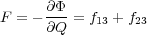 | (17) |
where fij is the sum of the vertical forces acting on all the atoms in region i due to all of the atoms in region j [13]. The important difference with the static definition of Eq. (14) is that the force is defined as the partial derivative of the interaction energy Φ rather than the total energy U. We see that the microscopic force on the tip is given as the sum of the partial forces on all atoms of the tip due to all of the atoms in the surface.
The above expression does not require that the system is in equilibrium, and, due to partitioning of the total Hamiltonian discussed above, Eq. (16), it naturally tends to zero when the tip and the surface are separated. It is also equivalent to the static definition (14) if the system is in equilibrium. Indeed, since f21 = -f12, f22 = 0 and f11 = 0 at any given time t, we can also write F as
|
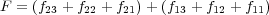 | (18) |
The first term (all three terms in the first brackets) is equal to the sum of the total forces acting on atoms in region 2 due to all other atoms in the system; it is equal to zero in mechanical equilibrium. Thus, in this case F reduces to the second term (the second brackets) which is equal to the sum of forces acting on the frozen atoms of the tip comprising region 3 which is indeed identical to that given by Eq. (14).
In practical calculations the expression for the force (17) is not very convenient since it requires calculation of partial forces due to different regions to be recorded during each simulation step. The equivalent expression (18), which will be referred to as the dynamic definition of the tip force (as opposed to the static definition of Eq. (14)) is much more convenient since it contains the sum of total forces acting on all atoms of the tip. This expresion is used in the code when calculating the continuous force on the tip during a simulaion.
All atoms of the system in SciFi are devided into three non-overlapping groups, some of the groups may be completely missing:
Interaction between atoms belonging to different groups can only be performed via a pairwise interaction. Also, no additional pairwise interaction can be present between Tersoff atoms or between many-body atoms. Electronic polarisation may be accounted for via the shell model (see below). However, no shell are allowed on the Tersoff atoms. All other atoms may have shells. For instance, manybody atoms may have them in which case interaction of these with pair-wise atoms will include electronic polarisation effects.
The potential energy surface of the system is modelled by the following force field:
|
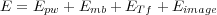 | (19) |
where Epw is the contribution from all present pair-wise interactions in the system including the electronic polarization; Emb is the interaction energy between many-body atoms; ETf is the interaction between Tersoff atoms; finally, Eimage is the contribution to the total energy due to applied bias and the polarization of electrodes as described in the Sections above.
Normally, calculations are performed on a system which is finite in all three directions (a finite cluster). However, if Tersoff atoms are present in the system, then it is possible to run 2D and 3D periodic calculations as well (i.e. in Periodic Boundary Conditions, PBC), i.e. atoms within the central cell are surrounded by their images. Only Tersoff atoms are mirrored, so that if there are any many-body (e.g. a molecule) or pair-wise atoms also present,. they do not know about their images, there is no interaction neiter between their images nor between them and the images of the Tersoff atoms.
The code also allows the forces on atoms calculated analytically to be checked by a numerical interpolation of the energy (see Section 8.2.4).
The pair-wise interactioon is modelled as follows:where
|
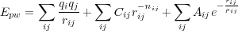 | (20) |
where the indices i,j run over all atoms (and their shells) which contribute to this interaction.
The program implements the Shell Model to calculate pairwise interactions, first introduced in [15]. In this scheme, atoms are represented by positively charged cores connected to negatively charged shells by harmonic springs, which represent nuclear and electron charge respectively. The equilibrium distance between the core and shell is a representation of the electronic polarization of that atom. Cores and shells of the same atom only interact via the harmonic spring, however each atomic core and shell interacts via colombic forces with all other cores and shells in the system.
Short range repulsive and Van de Waals forces are descibed by pairwise Buckingham potentials (last two terms in the above expression), which act only between shells.
If shell are not present, all interactions act between cores which have the actual charges
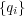
on atoms.
Many body interactions are used to model covalently bonded crystals and organic molecules in the system. The energy expression implemented in the code:
|
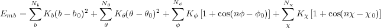 | (21) |
The terms in the above expression apply to the many body interactions in the system and summations only apply to the specified interactions, with the parameters suplied by the user. These interactions are most conveniently specified via the internal coordinates of the system, not via the Cartesian coordinates of atoms as is the case for other interactions. These are: bond lengths b, angles between bonds θ, torsions about bonds φ and out-of-plane angles χ. These are calculated using the expressions given in Figs. 3, 4 and 5. The internal coordinates are defined between the cores, and not shells, of atoms.
The length of a bond between two atoms in a molecule is straightforward to visualise, and is simply calculated as the magnitude of the vector (r) between the two atoms (i and j) (Figure 3).
The angle between two adjacent bonds in a molecule, or the angle formed by the three nuclei i, j and k is calculated using the dot product of the two vectors from j to i (rji) and j to k (rjk) as shown in figure 4.
A torsion angle about a bond j - k is defined for any four sequentially bonded atoms in a molecule, i, j, k and l and made by the angle between the planes formed by the two angles θijk and θjkl (Figure 3.4). The torsion angle is then calculated by taking the dot product of the normal unit vectors of these two planes, each of which is calculated from the vector cross products of rji with rjk and of rjk with rlk as shown in figure 5.
An out-of-plane angle needs to be defined when an atom in a molecule is bonded to just three other atoms (central atom i bonded to atoms j, k and l), and the out-of-plane angle (χ) is defined as the average of the three improper torsions formed by the interaction.
The improper torsion definition uses the torsion angle expression above to calculate the torsion angle formed by the atoms i - k - l - j, which is the angle between the plane formed by the three atoms i, k, l and the plane formed the atoms k, l and the central atom i. It is so called improper as the torsion is about two atoms that are not bonded together.
The analytical derivatives of these expresions were used in the previous versions of the code to calculate the gradients of the energy analytically. However, after the PBC was introduced (from version 4.0), forces are calculated numerically (this only belongs to the Tersoff interaction).
Interaction energy between Tersoff atoms is given according to the following equations:
|
| (22) |
where
|
| (23) |
|
| (24) |
|
| (25) |
|
| (26) |
|
| (27) |
The second summation in Eq. (22) (over j) is performed over all nearest neighbours (nn) of atom i. The summaiton over k in Eq. (26) is run over all nearest neighbours of i excluding atom j. Here FC(r) is a smoothing function. All other quantities are parameters. In spite of the apparently pair-wise form, Eq. (22), this is a many-body interaction in nature because of the way the coefficients bij are calculated in Eqs. (25) - (27).
The code contains default values of all parameters for Si, Ge and C. The user may change the parameters, however.
The code can perform constrained minimisation searches1. A general structure implemented actually allows for very sophisticated nonlinear constraines, but those in general require some additional coding which is desribed in some detail in the corresponding routines as documented in Table 1:
|
We shall first explain the main ideas of very general constraints; then linear constrains which are implemented in a rather general way in the code will be discussed specifically.
Constraints are dealt with in the following general way: every constrained equation specifies a single atomic coordinate of some atom (say, coordinate x of atom 3, i.e. x3) which is a function of other coordinates of the same and/or some other atoms, i.e. x3 = ξ(y3,z1,x2). The coordinate x3 is then made redundand and is removed from the optimisation space. The consequence of this is that, when calculating the “force” in the optimisation space associated with other coordinates which are involved in the given constraint, there will be an additional contribution due to the constraint. In the example above coordinates y3, z1 and x2 are involved, so that the energy
is a function of all coordinates except for x3. Therefore, the “force” associated with this coordinate is not needed during optimisation. However, e.g. the “force” associated with y3 becomes:
where f3y and f3x are the actual (physical) forces on atom 3 in the y and x directions, respectively. These are calculated routinely in the code irrespective of the constraints. The derivative needed for the calculation of the “force” 3y should be calculated analytically for every particular constraint from the known function ξ and then coded in in the appropriate places.
There is presently only one important limitation on the atoms involved in constraints: a reduntand coordinate must be contained in only one constraint; it is not allowed that it is a member of another constraint as well. However, other coordinates are allowed to participate in several constraints.
A note for programmers: coordinates allowed to relax have their relaxation flags (iRx, iRy, iRz) fixed to 1; coordinates not allowed to relax have the flags equal to 0; redundand coordinates, however, have their flags equal to 2. Gradients are calculated for all atoms which have their flags larger than zero.
In the case of linear constraines atomic coordinates of atoms (either different, the same or both) may be related linearly to each other. Let us collect all those related atomic Cartesian coordinates into a set (ri) (i is not an atom number, but rather a number in the set). Then, the linear relationship between memebers of the set can be expressed as follows:
|
| (28) |
where Ci are some constants defined by the nature of the specific constraint. Note that not all atoms and all x, y, z components of atomic coordinates may be present. In practice several equations like that given above can be supplied. Different constraints will be distinguished by an additional index k.
The simplest example is to allow atoms to move only along certain directions. Simply by specifying relaxation flags iRx, iRy, iRz in the input (opposite to atomic coordinates, see section 8.4.5) one can already allow atoms to move only along x, y or z axes or in xy, yz or xz planes; additional constraines are not required in all those cases. However, imagine you would like to allow, say, atom 5 to move only along the (111) direction, i.e. to have x5 = y5 = z5. In this case you will have to specify the following 2 constraints:
Obviously, there is only one independent coordinate in this case. If x5 is considered as the redundand coordinate from the first constraint and z5 - from the second (since the coordinate y5 must not be chosen as a redundand coordinate as it appears in both conditions), the only “active” coordinate in this case will be y5. In more complicated cases different atoms may be involved as well.
The first coordinate in the constraints equations like Eq. (28) with nonzero coefficient C1(k)≠0, as supplied in the input (section 8.10), is treated automatically as the redundand variable r1(k) for the constraint k. This allows to express the redundant variable via all others involved in the given constraint
|
| (29) |
and then calculate the correction Δj(k) to the “force” j on any of the nonredundand atoms j due to the constraint k as:
where i ≡ i(j) is the position of atom j in the list of atoms involved in the constraint k. The total “force” is obtained by adding corrections Δj(k) due to all constraints to the physical force fj.
Another simple (but nonlinear) constraint which has been implemented is to keep a distance, d, between two atoms constant. If, say, atoms 1 and 2 are involved, then the x component of the first atom specified in the input (section 8.10) is considered as redundant. It is expressed via other coordinates as follows:
where two choices of the sign are possible. The correction to the “force” associated with nonredundand coordinates y1, z1 and x2, y2, z2 is calculated correspondingly.
If angle α between three atoms, say atoms 1, 2 and 3, is to be kept constant, then the redundand coordinate is choisen to be the x coordinate of the first atom in the input (section 8.10). It is expressed via other 8 coordinates as follows:
where d = y12y32 + z12z32, Δ122 = y122 + z122, r322 = x322 + y322 + z322 and x32 = x3 -x2 , etc. The correction to “forces” are straighforward to calculate; they look very cumbersome and not yet implemented.
If a Molecular Dynamics (MD) simulation is being performed, then the trajectories of atoms are integrated at each timestep using the standard Verlet Leapfrog algorithm [16] in the NVE ensemble, and a variation of it if a thermostat is used to simulate in the NVT ensemble. The different algorithms used are described in the following section.
The standard Verlet Leapfrog algorithm first generates new velocities at timestep n + from the velocities at timestep n - and the forces on all atoms as follows:
Then the positions of all atoms are advanced one timestep based on the new velocities:
The tempurature of the system at time t is then calculated as the average of the temperatures of the system at timestep t -Δt and t + Δt.
The initial velocities for the system can optionally be provided by the user in the input file, however if they are not the program asigns randomly oriented velocites to each of the free atoms in the system based on the given system temperature, ensuring that the total translational and rotational angular momentum of the system is zero.
If the system is to be simulated in the NVT ensembe, then the user has the choice of four different algothims, the Gaussian thermostat [17], Berendsen thermostat, the Nose-Hoover thermostat [18] and stochastic boundary conditions [19]. The first of these, the Gaussian constraint thermostat, rescales the velocities of atoms at each timestep to achieve a constant system temperature, however this algorithm will destroy dynamic correlations very quickly. The basic algorithm is detailed below:
Where, T is the temperture at timestep t (that is calculated self consistently with three iterations) and Text is the given system temperature or bath temperature.
The Berendsen thermostat is essentially a cross between the NVE and Gaussian algorithms that uses a user defined relaxation constant that determines the degree of rescaling of the velocities. The Berendsen thermostat can be used to push a system towards a desired temperture as oppsed to enforcing it. The basic algorithm is detailed bellow:
Where τ is the user defined time constant in units of ps. As with the Gaussian thermostat, the temperature is calcaulted self consistently over three iterations.
[to be added later]
To simulate coupling to a heat bath and to physically allow energy gained by the system from a moving tip to be carried off to infinity, all or a subset (at the boundaries) of the atoms in a system can be subject to a random impulse and frictional force at every timestep, governed by the Langevin equation:
Where p and q and the atomic momentums and positions respectively, U is the total system energy, γ is the parametric friction coefficient and F+is a Gaussian distributed random force, the size of which is given by the second fluctuation-dissipation theorem:
The algorithm used to integrate the equations of motion is the same as the Verlet Leapfrog, except that the velocity proportional friction force and random impulse is added to the total systematic force prior to the integration. The larger the friction coefficient, γ, the faster the system will react to a change in temperature and as γ → 0 the system tends to the NVE ensemble. The code allows the friction coefficient of each degree of freedom in the system to be assigned individually by the user in the input file.
It has been demostrated in [19] that this scheme is only valid when the decay time of the friction coefficient is much larger than the time step in the simualtion, i.e.
The code will not prevent or warn the user from using any value for the friction coefficient.
The code has the facility to treat shells dynamically by one of two separate algorithms, which the user selects. The first of these the Dynamical Shell model, first introduced in [20], each shell is given a small mass and the shell motions are integrated along with the atomic cores, in a similar way to a di-atomic molecule. This method is computationally cheap, however a smaller timestep must be used to allow the high frequency core-shell oscillations to be integrated accurately. Also over long time periods, kinetic energy unphysically leaks in to the core-shell degree of freedom, although the program calculates the core-shell temperature and so this can be monitored.
The second algorithm, first introduced in [21], relaxes the zero-mass shells at each timestep by minimising the system energy with respect to shell positions. The shells are then removed for the integration, wile the cores are still subject the the shell systematic force. This algothim is more physical and accurate than the first, however it is much more computationally expensive, since a minimisation must take place at every timestep.
At the present time these dynamical shell models have only been impemented in the NVE ensemble.
The virtual AFM was built on the basis of the precise experimental determination of the transfer function and impulse response of each element of the real AFM in order to reproduce as precisely as possible the experimental behaviours. A room temperature commercial AFM/STM [22] was used with its standard electronic control system, except for the frequency demodulator which was replaced by a digital Phase Locked Loop (PLL) based frequency demodulator [23]. The block diagram of the system is shown in figure 6.
FM-AFM involves two control loops:
The dynamics of the cantilever is giverned by the following equation of motion:
|
| (30) |
It is solved numericacally using the velocity Verlet algorithm[27]. In this equation z(t) is the vertical displacement of the cantileved around its mean value. The actual distance of the cantilever from the surface plane is given by z(t) + D(t) as shown in Fig. 7.
Various terms in the above equation have the following meaning:
Amplitude regulation is achieved by the Automatic Gain Control (see figure 8). The modulus A(t) of the cantilever oscillation z(t) is extracted by a diode followed by a first-order low-pass filter, modelized by:
|
| (31) |
with τD being the time constant of the envelope detection.
A(t) is then compared to the amplitude setpoint A0. The error signal A(t) - A0, after being fed into a PI (Proportional-Integral) system [28, 29, 30], is used to change the variable gain R(t). Both the Proportional gain KPAGC (controlling the “stiffness” of the AGC loop) and the Integration gain KIAGC (controlling the “viscosity” of the AGC loop) can be set by the user. One obtains the dynamic gain R(t):
|
| (32) |
Without tip-surface interaction, R(D →∞) = with Apll = 1.
Far from any tip-surface interaction, the pulsation ωpll(t) of the PLL (see figure 9) reference signal is set by the user to the free frequency of the cantilever such as ωpll(t) = ω0. The VCO (Voltage Controlled Oscillator), inside the PLL, produces this reference signal by the integration of the input voltage u(t):
|
| (33) |
where K0 (in Hz) is the conversion factor (voltage to frequency) of the VCO [31].
The signal u(t) which is proportional to the detuning, Δω(t) = ω(t) - ω0, of the cantilever frequency, is obtained by low-pass filtering the product p(t) of the reference signal by the cantilever signal z(t) coming from the photodiode. Hence:
In first approximation, if we consider z(t) = A(t) sin(ω(t)t + φ), one obtains:
|
| (35) |
with a limiter circuit, at the input of the PLL, that limits the signal amplitude A(t) to a constant level Alimited.
This signal p(t) then goes through a second order low-pass filter defined by two time constants τ1 and τ2:
|
| (36) |
|
| (37) |
Thanks to this low-pass filter, the low frequency part, ω(t) - ωpll(t), of the signal p(t) is extracted. The parameter G allows to adjust the loop gain of the PLL in order to find the good stability-precision compromise [32]. Hence:
|
| (38) |
When ωpll(t) = ω(t), the PLL is locked on the cantilever frequency. So, one can write, in the case of small changes Δφ = φ - φpll:
|
| (39) |
giving the frequency detuning Δω(t) = K0 u(t).
The Δf(t) = signal coming from the frequency demodulator (see figure 9) is used to regulate the distance D(t) between the cantilever and the surface in order to satisfy the frequency setpoint Δfc (see figure 10) defined by the user [33, 34]. Following this rule, one gets the following expression:
|
| (40) |
where we find, like in the AGC (see equation 32), a PI (Proportional-Integral) system with gains KPADC and KIADC defined by the user. D1 is an ajustable offset in distance.
Another useful application of the virtual AFM is the realistic evaluation of the limitations imposed by the noise generated by the components of the system. Sources of noise in beam deflection AFM have been discussed in [35]. The major ones are [36]:
The thermal noise of the cantilever [37, 33], whose power spectral density reads:
|
| (41) |
with the temperature T, the Boltzmann constant kB. In virtual AFM, this noise is implemented at left in equation 30 as a noise force.
The amplitude shot noise [38, 36] of one photodiode quadrant detector:
|
| (42) |
with the elementary charge qe, the photodiode voltage V ph (1V olt in our experimental conditions), the transimpedance resistor Rtrans (500kΩ [22]). Gopt is a factor to convert the cantilever oscillation in volts coming from the photodiode in nanometers. It depends of the geometrical design of the optical detection but also of the kind of light source used (Laser, LED, ...). In our case, we measured Gopt = 400nm.V -1.
Finally, the Johnson noise of the resistor of the current-voltage converter that monitors the photodiodes:
|
| (43) |
The amplitude shot noise and Johnson noise are both used as amplitude noises inside z(t) the vertical displacement of the cantilever coming from the photodiode signal.
The aim of the virtual machine is to mimic the dynamic of a true experimental AFM system. In this subsection we shall briefly describe a response of the whole machine (Omicron RT-AFM with an easyPLL Nanosurf Demodulator) on a square periodic offset added to the distance signal D(t). This is an example of how one can experimentally find the correct parameters needed to run the virtual AFM machine.
Fig. 11 (a) shows the frequency response to a periodic square excitation added to the surface-tip distance D while the microscope was in operation above a MoS2 substrate covered by silver clusters. This measurement was performed for two different settings of the ADC feedback loop. A loop gain of 2% (slow response) corresponds to the typical value for normal imaging while a loop gain of 20% (fast response) is only used when approaching the surface at the beginning of the experiment. The asymmetry of the response between a positive and negative Δf (the positive peak is smaller and wider than the negative one) is a consequence of the increase of the absolute value of the slope of the van der Waals interaction when the tip approaches the surface.
Fig. 11 (b) shows the response calculated with the virtual AFM modelling the tip by a sphere of the radius 20 nm and taking into account only the van der Waals interaction between tyhe tip and sample, with a Hamaker constant of 1 eV. The experimental behaviour can be well reproduced by choosing the parameters KPADC and KIADC [30]. The shape of the peaks is qualitatively correct while the time constants, ranging from a few milliseconds at 20% to a few tens of milliseconds at 2%, are of the same order of magnitude as in the experiment.
|
The code should be in the form of a gzipped tarball, such as scifi_4.3.5.tgz. Assuming this, then type:
tar -zxvf scifi_4.3.5.tgz
this will extract all the necessary files, including the main of the code (including the vAFM part) and IMAGE (the image part of the code), a directory examples containing some examples input files and the corresponding output files (not all may be up-to-date and may require editing).
To compile the program, a Makefile in either of the main directory and in IMAGE, should be edited to include the command of your Fortran 77 or Fortran 90 compiler, along with any compiler options.
The code can be compiled into either a serial execultable or a MPICH parallel version, via the cpp precompiler. To compile a parallel version, the MPIFLAG = -DMPI must be added to the Makefile, as well as the MPICH flags to your compiler and the path of your mpich.h header file.
To compile the code, type
make
in either of the two directories; this will produce the executables shellm and image, respectively. Make sure that you have access to both executables, i.e. that the directories are included in the $path variable.
You can now run the code (see below how). Make sure that you can reproduce the output from the the example inputs provided in the examples directory (section V).
The file param.inc in the main directory contains all the matrix sizes for the calculation. This file must be edited before compilation if changes are needed. Below is an example:
implicit real*8 (a-h,o-z)
c............. parameters:
c N0KD - max number of species
c N0LT - max number of atoms
c N0CH - max number of all charges (cores+shells)
c N0PAR - number of exp/power terms in the short-range interaction
c N0FR=max_free - max number of degrees of freedom for optimisation
c isaved_step - the MD restart saving interval
c max_proc - maximum number of processors
c N0BD - maximum number of covailent bonds per atom
parameter ( N0PAR=5,N0KD=10, N0LT=4500, N0CH=2*N0LT )
parameter ( N0KD1=N0KD*(N0KD+1)/2 )
parameter ( N0FR=6300 , max_free=N0FR)
c BFGS_st_desc_max - max number of times BFGS can run steepest descent
c in a row. This prevents the code to get stuck in this.
parameter ( iBFGS_st_desc_max=1)
parameter (isaved_rst = 100)
parameter ( N0BD = 6)
parameter ( max_proc = 100 )
c N0CNSTR - max number of constraints
c NinvAt0 - max number of atoms participating in every constarint parameter (N0CNSTR=10,NinvAt0=10)
These are the default values, but they can be reduced to reduce memory demands or increased for bigger systems. The most crucial parameter is N0LT which controls the maximum number of charges (N0CH = 2*N0LT) in the system, if this is changed then N0FR, the maximum degrees of freedom, should be changed correspondingly.
The file virtual_param.inc contains all the matrix sizes for the calculation. This file must be edited and a compilation performed if changes are needed. Below is an example:
parameter (pi=3.141592653589793d0, twopi=2.d0*pi)
c........ max number of steps/stages
parameter (N_of_stages_max=99)
c......... scans: max number of scans allowed
parameter (N_of_scans_max=5)
c......... units: distance, force double precision m_A,N_eVpA,J_eV
parameter (m_A=1.0d10,N_eVpA=6.2415d8,J_eV=6.2415d18)
c......... threshold for the distance
parameter (threshold=1.0d-10)
The most important parameters are:
The code is run with a command line like this:
shellm name [option]
where name is the job identifier. Only a single option is available which is the word restart. This is used to restart the calculation from the file name.RST written previously.
The code reads in a single unformatted input file which can be in one of two forms: either an initial file (name.INN) or a restart file (name.RST). The only difference is that a restart file has been produced by the code itself and normally contains relaxed positions of atoms and shell-polarization. A restart file will automatically be produced after every run of the code, regardless of the options selected.
The code will use an initial (.INN) file of the appropriate name if no option is given. If the keyword ’restart’ is given as an option then the program will open the restart file of the appropriate name as input. The code will also produce an input file input.img if the .<IMAGE> box is present. This contains all atomic positions (excluding frozen-tip), charges and general information about the system relevant to the image calculation, and can be ignored except for debugging purposes. The image part of the code runs independently of the main code, but is called automatically without requiring user intervention.
The input file itself is separated into specific boxes for each category of input parameters. Each box begins with the keyword name of the box in the format .<keyword> and then the appropriate keywords and parameters for that box are listed. Keywords must be placed in the input box they are classed in, they will be ignored in other boxes. Some keywords require another controlling word or parameter value, whereas others are activated by just being present. After the example file, each box and its keywords are explained, along with possible parameters which can be used.
Comments can be entered into the input file by placing ## before the line. Empty lines will be ignored. There is no specific order required for the boxes in the input file, but there is some order needed for specific keywords within the boxes. These position dependent keywords will be highlighted below.
Boxes described in Section 8 correspond to the SciFi part of the code. If an error is generated when reading those boxes (in particular, if some or all boxes are missing), then the SciFi part is switched off. Next, an vAFM input is read in. If there is no error, the vAFM part of the code is working relying on an existing force field. Otherwise, the code stops with an error message. Conversely, if there is only an error in the vAFM part, then the code works as a SciFi code. The vAFM input part is described separately in Section 9.
Also note that chemically identical atoms, but belonging to different groups of species, should be given different identifier; the 3rd character may also be used (e.g. C1, C2, Mg1, Mg5, etc.).
This input file contains a system where the tip consists of only one atom at the end of a conducting sphere interacting with a small defected cluster on top of a conducting substrate.
.<Toleranc>
do_md
printing tiny
shells frozen
xyz write
##g98-file write
max_opt 1
optim bfgs
en_tol 0.150000E-05
es_tol 0.500000E-01
frc_tol 0.100000E-01
crd_tol 0.500000E-01
##test 0.0001
.<End>
.<MDcontrol>
numsteps 2000
tstep 0.00001
dtemp 330.000
algorithm nve
shells dynamic
tau 0.2000
statistics 1
trajectory 20
traj_fmt 1
vel_key 0
.<End>
.<ShellPar>
O 0.400000E-01 -.204000E+01 0.143000E+02
Mg 0.200000E+01 0.000000E+00 0.000000E+00
Cr 0.300000E+01 0.000000E+00 0.000000E+00
.<End>
.<Coord>
##move 1.0 1.0 1.0
##rotate 90.0 90.0 90.0
##centre 5.0 5.0 5.0
##scan 0.2
tip-atoms
Cr 0.00000 0.00000 5.50000 1 1 1
cluster-atoms
Cr 0.00000 0.00000 0.00000 1 1 1
O -2.12200 0.00000 0.00000 1 1 1
O 0.00000 -2.12200 0.00000 1 1 1
O 0.00000 0.00000 -2.12200 1 1 1
O 0.00000 2.12200 0.00000 1 1 1
O 2.12200 0.00000 0.00000 1 1 1
Mg -2.12200 -2.12200 0.00000 1 1 1
Mg -2.12200 2.12200 0.00000 1 1 1
Mg 2.12200 -2.12200 0.00000 1 1 1
Mg 2.12200 2.12200 0.00000 1 1 1
Mg -4.24400 0.00000 0.00000 1 1 1
Mg 0.00000 -4.24400 0.00000 1 1 1
Mg 0.00000 4.24400 0.00000 1 1 1
Mg 4.24400 0.00000 0.00000 1 1 1
Mg 0.00000 -2.12200 -2.12200 1 1 1
Mg 0.00000 2.12200 -2.12200 1 1 1
Mg -2.12200 0.00000 -2.12200 1 1 1
Mg 2.12200 0.00000 -2.12200 1 1 1
Mg 0.00000 0.00000 -4.24400 1 1 1
O -2.12200 -2.12200 -2.12200 1 1 0
O -2.12200 2.12200 -2.12200 1 1 0
O 2.12200 -2.12200 -2.12200 1 1 0
O 2.12200 2.12200 -2.12200 1 1 0
O -4.24400 -2.12200 0.00000 1 1 0
O -4.24400 0.00000 -2.12200 1 1 0
O -4.24400 2.12200 0.00000 0 0 0
O -2.12200 -4.24400 0.00000 0 0 0
O -2.12200 0.00000 -4.24400 0 0 0
O -2.12200 4.24400 0.00000 0 0 0
O 0.00000 -4.24400 -2.12200 0 0 0
.<End>
.<BondToleranc>
O O 0.000000000000000 0.000000000000000
Mg O 0.000000000000000 0.000000000000000
Mg Mg 0.000000000000000 0.000000000000000
Cr O 0.000000000000000 0.000000000000000
Mg Cr 0.000000000000000 0.000000000000000
Cr Cr 0.000000000000000 0.000000000000000
.<End>
.<PairPotenc>
cutoff
O O 0.600000E+01
exp 1
9547.90000000000 0.219160000000000
pow 1
-32.8000000000000 6.00000000000000
Mg O 0.600000E+01
exp 1
1284.38000000000 0.299690000000000
pow 0
Mg Mg 0.100000E+00
exp 0
pow 0
Cr O 0.600000E+01
exp 1
1284.38000000000 0.299690000000000
pow 0
Cr Mg 0.100000E+00
exp 0
pow 0
Cr Cr 0.100000E+00
exp 0
pow 0
.<End>
.<Image>
plane
sphere
decay
qwrite
printing tiny
precis 15
Z_plane -.110000E+02
bottom_sph 0.000000E+00 0.000000E+00 5.0
bias 0.100000E+01
radius 0.100000E+03
smooth 0.3
buffer 2.0
.<End>
Box Keyword: .<Toleranc>
This box controls the type and amount of output produced by the program, and also the accuracy of the values calculated. It uses the following keywords which can be positioned independently within the box:
If present energies, positions and forces of all atoms will be dumped in the file job.31 every time thery are calculated, where job is the name/job identifier. May be found useful in testing this or other codes.
Default: off
Example: write_energy_forces
If present forces on all frozen tip atoms (regions “frozen tip” and “tip buffer”) will be written to a file filename specified. This can be used to reduce the noise of the tip force by previously relaxing the tip alone and writing any residual forces left (see the next option) to the file.
Options: filename
Default: off
Example: write_forces myfile
If present forces on all frozen tip atoms written to a file filename (e.g. for an isolated tip) will be read in and subtracted from the current tip force to reduce the noise (see the previous option).
Options: filename
Default: off
Example: read_forces myfile
If present, the lateral forces on the tip (in the x and y directions) will also be calculated and dumped in files name.TFX and name.TFY alongside with the z force in name.TFZ. As a default, only the z force on the tip is calculated. Note that presently, only the z-force can be calculated if Image is on, so that the code will stop if do_lateral is chosen together with the Image box.
Options: none
Default: off
Example: do_lateral
Controls whether shells in regions “cluster atoms” and “tip atoms” are allowed to relax.
Options:
Default: moveall
Example: shells moveall
Controls amount of information in output file.
Options: no, tiny, small, medium, large, huge
Default: tiny
Example: printing medium
If present, a xyz format file with all atomic coordinates after run finishes will be printed out. This will produce two files, name_core.xyz and name_shll.xyz containing the atomic and shell positions, respectively.
Options: none
Default: off
Example: xyz
Flag to produce a cumulative xyz file during relaxation for use in producing a movie of the displacements with appropriate software e.g. xmol.
Options: none
Default: off
Example: movie
If present, a Gaussian98 format file after run finishes will be printed out.
Options: none
Default: off
Example: g98
If present, this flag will activate an update of the atomic positions in the RST file after every relaxation step if minimising energy, and will update atomic positions and velocities after every i_saved_RST timesteps (given in param.inc file) during an MD run. This will slow down the code; however, it will save you the latest geometry in the case of a crash or if you want to kill a running job.
Options: none
Default: off
Example: update_RST
Maximum number of relaxation iterations (N) to be used within the optimisation method chosen (see below).
Options: N
Default: N = 100
Example: max_opt 15
The energy minimisation which is specified using this keyword is the default algorithm. Note that if the .<MDcontrol> box is found (section 8.7.1), then the Molecular Dynamic simulation is performed in which case this option is either ignored when fictious dynamics with shells is assumed, or used to optimise shells positions in the case of the only-cores dynamics (more details in section 8.7.1).
Controls the relaxation algorithm used, at present either steepest descent, bfgs, conjugate gradient or both. In the latter case the conjugate gradient method is applied during the first 3 iterations after which the bfgs is applied to finish the relaxation calculation. To use both bfgs and conjugate gradient just put the optim flag twice in the input, once with bfgs and once with conj. The conj option can also take an additional parameter which changes the default conjugate gradient algorithm from fl_reeves to polak_rib.
Options: steep, bfgs, conj (polak or fl_reeves (default))
Default: off
Example 1: optim conj polak
Example 2: optim conj
Example 3: optim bfgs
Example 4: optim bfgs
optim conj
Tolerance of the total energy in eV (#).
Options: #
Default: # = 1.0e-6
Example: en_tol 1.0e-5
Tolerance of the coordinates in Å(#).
Options: #
Default: # = 0.01
Example: crd_tol 0.001
Tolerance of the forces on the atoms in eV/Å(#).
Options: #
Default: # = 0.1
Example: frc_tol 0.01
Maximum energy change during 1-dimensional search in eV (#) during steepest descent (steep) or conjugate gradient (conj) methods.
Options: #
Default: # = 0.05
Example: es_tol 0.1
If present the atom which has the maximum force is moved by the step # (in Å) along the force if either of the optimisation routines (BFGS or CG) got stuck. Altogether this can be done only 2 times during the optimisation. If the optimisation engine got stuck for the 3rd time, the code will stop.
Options: #
Default: # = 0.01
Example: shake 0.1
This flag will activate a numerical test of the input, the energy, the forces on the atoms or the tip depending on the option selected. A value for the step # used in calculating the numerical force can also be given.
Options:
Default (general):
Example 1: test atom 0.00005
Example 2: test tip 0.01
Example 3: test input
Box Keyword: .<ShellPar>
This box is used to input all species identifiers used in the current calculation, alongside the charges and masses on atoms and their shells (in electron charge and atomic mass units respectively), along with the spring constant between them (in Newton metres). It has the following format:
Element1 Mcore Qcore Mshell Qshell k
Element2 Mcore Qcore Mshell Qshell k
etc ....
where Element1, Element2, etc. are the atomic element names from the periodic table. The element name can also include a numerical identifier as a third character, e.g. Mg1, to differentiate between the same atom species with different interactions. This can be used to model atoms of the same species in the surface and tip differently.
Any atoms which have both a Qcore and Qshell will have a shell created automatically and positioned at the same place as the initial atom coordinates. This will then be free to relax independently of the original atom to represent electronic polarization. If Qshell is zero then no shell will exist for this element. If an energy minimisation is being performed, then the values provided for the core and shell masses will be ignored.
During an MD simulation shell dynamics is handled by one of two algorithms, specified in the MDcontrol box, either the fictitious dynamic shell model or the relaxed shell model (sections 8.2.3 and 8.7.1). In the first of these, any shells must be given a (usually small) mass, so that equations of motion can be integrated. In the second, shells are relaxed at every timestep and require no mass (if a mass is provided it will be ignored).
Box Keyword: .<SpesiesTypes>
This box is mandatory if either Tersoff or many-body interactions are present. It is used to identify species belonging to Tersoff group of atoms as well as many-body group of atoms. Either one fo the following two lines, or both of them, should be present:
Tersoff_Species S1 S2 ....
ManyBody_Species T1 T2 ...
where S1, S2, etc. are all species (any order) corresponding to the Tersoff group of species (e.g. Si, Si#), and T1, T2 , etc. are the many-body species. Note that in the case of the Tersoff species the boundary species (with the # at the end) must also be present as a separate species.
Box Keyword: .<Coord>
Atomic positions are specified in this box.
This flag moves the tip by the given x, y, z values in the x, y, z directions respectively prior to relaxation. It must appear before the coordinates of the atoms. Note that this also moves the conducting sphere, if present, by the same amount.
Options: x y z
Default: off, x =0.0, y =0.0, z =0.0
Example: move 0.0 -4.0 15.0
This flag rotates the tip around the x, y, z axes by the angles α, β, γ (in degrees) respectively prior to relaxation. It must appear before the coordinates of the atoms.
Options: α β γ
Default: off, α = β = γ = 0
Example: rotate 0.0 0.0 45.0
This flag is used to specify the centre of the rotations given after the rotate keyword. It must appear before the coordinates of the atoms.
Options: x y z
Default: off, x =0.0, y =0.0, z =0.0
Example: centre 10.0 10.0 0.0
This keyword activates the script-based “scanning” mode, when only a move option with a specific displacement (x, y, z) is added to the final name.RST file after relaxation. This can be used in a shell script to run a series of name.RST files and produce a plot of energy or force vs. distance, with the designated tip atoms moving the specified step in each file.
Options: #
Default: off
Example: scan 0.1 0.1 0.1
Since version 3.11 this option became redundant after introducing the dynamic tip option which does the same job during one job run and thus avoids using complicated shell scripts (see section 8.8). However, it can still be used if desired!
The rest of the coordinates input box is used to input the positions of the atoms in the system in cartesian coordinates. Every atom is entered in the same format, but each belongs to one of five classes of atoms depending on the keyword used at the beginning of its group. The five keywords are:
These groups can only appear once each in the coordinates section, although the order in which they appear is irrelevant. The format of entry of the coordinates is as follows:
Element1 x y z (iRx iRy iRz)
Element2 x y z (iRx iRy iRz)
etc.....
The parameters iRx, iRy, iRz control whether an atom is allowed to relax in the x, y, z directions respectively - 0 0 0 would fix the atom in all three directions. They are optional and do not need to be specified. The default values for iRx, iRy, iRz are taken from the group the atoms belong to e.g. all tip- and cluster-atoms atoms are relaxed by default. The relaxation flags for shells are obtained appropriately from the shell option (section 8.2.1).
Box Keyword: .<PairPotenc>
This box contains the parameters which control the interactions (excluding electrostatic charge-charge interactions which are calculated implicitly) between atoms in the system. It must contain an entry for each pair of elements including itself. If a pair is entered twice, only the first pair will be used. The following general short-range interaction can be used:
|
| (44) |
If you wish to use a cutoff (in Å) for the interactions, then the keyword cutoff must be the first entry in the pairpotenc box. If this keyword is not present then the cutoffs entered in the pair interactions will be ignored (in other words you do not need to enter any) and the interaction will be across the entire system. However, an error will be produced if the cutoff keyword is used, but cutoff values for every pair are not present. The parameters of the one pair’s interaction are entered in the following format:
Element1 Element2 (cutoff)
exp #
Aj ρj
pow #
Ci ni
The number # after exp and pow specifies the number of exponential and power terms in the interaction respectively. The appropriate number of parameters must then follow below, remembering that all values should be entered in units of Å of distance and eV of energy.
Box Keyword: .<BondToleranc>
This box contains a list of each pair of elements in the system, with a maximum and minimum covalent bond length (in Å) which is used to create a connectivity table. It is mandatory of either (or both) Tersoff or many-body interactions are used. If the initial distance between two atoms falls within the tolerances, then a bond will be created between the two atoms. The connectivity table is then used to create lists of all bonds, angles, torsions and out-of-plane interactions, the parameters of which are provided in the relevant boxes.
Element1 Element2 Distmin Distmax
The code excludes pairs of atoms involved in bond and three body interactions from electrostatic and short range interactions.
Box Keyword: .<quadratic_bond>
This box lists every pair of elements interating with a quadratic covailent bond, via the potential:
V ij = V 0(r - r0)2
In the following format:
Element1 Element2 V 0 r0
Box Keyword: .<quadratic_angle>
This box lists every sequence of three elements interacting with a quadratic angle potential:
In the following format:
Element1 Element2 Element3 V 0 θ0
Box Keyword: .<torsion_1>
This box lists every sequence of four elements interacting with a torsional potential:
In the following format:
Element1 Element2 Element3 Element4 V 0 φ0 n
The program also understands the use of wild cards (*) in torsion sequences, i.e. when the potential is independent of the two end atoms:
* Element2 Element3 * V 0 φ0
If the entire four atom torsion potential is present for an interaction it is used, if it is not present the the program searches for the appropriate potential with wild cards.
Box Keyword: .<out_of_plane>
This box lists all elements forming an out-of-plane interaction with a potential:
The angle χ is defined as the average of the three improper torsions formed by the interaction.
The potentials are listed in the following format:
Element1 Element2 Element3 Element4 V 0 χ0 n
Element2 is the central atom, and so the order of Element1, Element3 and Element4 is irrelevant.
Keyword: .<Tersoff>
Then, the following commands may be specified:
how_often_nn_update #
system PBC
where the first command specifies how often the connectivity table should be updated during an MD run (# is the number of MD steps after which the table is to be updated).
The the second command specifies the type of the periodic boundary conditioons: PBC stands for either ’surf’ or ’bulk’ which is 2D and 3D, respectively. If this command is missing, the simulation system represents a finite cluster.
Default parameter of theTersoff potential can be replaced in this box as well. There are parameters depending on one, two and three species. Not all of the may be given, onnly those which need replacing.
If Tersoff atoms are present and the system command specifies either ’surface’ or ’bulk’, then lattice vectors should be specified as well. This is done in this box.
Keyword: .<Lattice>
Then, either two (’surface’) or three (’bulk’) lattice vectors follow one on each line:
A1x A1y A1y
A2x A2y A2z
A3x A3y A3z (only needed if 3D PBC)
Box Keyword: .<MDcontrol>
If present the program performs a Molecular Dynamics simulation on the system with the parameters given in the .<MDcontrol> box. If absent the program performs an energy minimisation (default). The corresponding input parameters are described below.
Specifies the number of time steps to run the MD simulation for.
Options: #
Default: 1000
Example: numsteps 1000
Specifies the length of the timestep in picoseconds.
Options: #
Default: 0.001
Example: tstep 0.001
Specifies the required system temperature in degrees Kelvin. It is used both to generate initial velocities (if they are not provided) and also to control the temperatue if a thermostat (see below) is used.
Options: #
Default: 300.0
Example: dtemp 300.0
Specifies the algorithm used to integrate the equations of motion.
Options:
Default: nve
Example: algorithm stochastic
Specifies the type of shell model to be used in dynamical simulations.
Options:
Default: dynamic
Example: shells dynamic
Specifies relaxation time in picoseconds for thermostats.
Options: #
Default: 1
Example: tau 0.5
Specifies the interval (in timesteps) between printing system information to the name.STS file.
Options: #
Default: 1
Example: statistics 100
Specifies the interval (in timesteps) between printing configuration information to the name.TRJ file.
Options: #
Default: 1
Example: trajectory 100
Key to specify the format of the trajectory file.
Options:
Default: 1
Example: traj_fmt 1
Key to either read in atomic velocities from the .<Velocity> box, or thermalise the system initially to dtemp.
Options:
Default: 0
Example: vel_key 0
Box Keyword: .<Velocity>
This box contains the initial velocities of all the free atoms in the system, and is only read in if vel_key in the MDcontrol box is set to 1, otherwise velocities are generated according to the given system temperature. The velocities given in this box must be in exactly the same order as the atomic coordinates in order to correspond to the correct atoms, if atoms have shells shell velocities can be given, otherwise the shell velocities are set equal to the atomic velocities. The units are Å/ps, and the format is as follows:
vcorex vcorey vcorez vshellx vshelly vshellz
Box Keyword: .<Friction>
This box contains the friction coeffecients for all the components of all the atoms is the system for the stochastic thermostat, and is only read in if the stochastic integration algorithm is selected in the MDcontrol box. This box must contain an entry for each atom in the system, in the order given in the atomic coordinate box. Each entry constists of an integer flag followed by the x, y and z components of the friction coefficient for that atom. If the flag is set to 0, the atom will not be conected to the stochastic thermostat, and its motion will be integrated using the standard Verlet leapfrog algorithm, if the flag is set to 1, the atom will be connected to the thermostat. E.g.:
1 γx γy γz
Box Keyword: .<TipDynamics>
This option allows the frozen atoms of the tip to be moved during the MD or energy relaxation simulations. This option is implemented differently in either case.
A single string command is used to specify the tip movement during the scan:
The tip can be scanned laterally at a constant velocity, or oscillated sinusoidally in the z-direction, or both at the same time. The option is followed by four parameters, as indicated above, which control the movement of the tip, according to the following equations of motion:
where n is the timestep number and Δt is the timestep itself. The units of A are Å, the units of T are ps, the units of vx and vy Å/ps.
Options: A T vx vy
Default: no
Example: howto 4.0 20.0 1.0 1.0
where (Rx, Ry, Rz) is the step vector R (in Å) and N is the number of steps to be used to move the tip along the step direction R.
If present, the tip will reverse its direction along the scan after performing N steps and should return to the initial position. Total number of points along the path is 2N. This option is useful e.g. when studying adhesion effects.
Box Keyword: .<Image>
If present, the polarisation of the electrods (the image interaction) will also be applied. The options below within the Image box are used to produce an input file for the image code which is called from inside the shellm.
This keyword includes the effect of a infinite conducting plane in the calculation of the image force.
Options: none
Default: off
Example: plane
This specifies the position of the infinite conducting plane on the z-axis in Å(#). It is only meaningful if the keyword plane is also present.
Options: #
Default: # = 0.0
Example: Z_plane -15.0
This keyword includes the effect of a conducting sphere in the calculation of the image force.
Options: none
Default: off
Example: sphere
This specifies the position x, y, z of the bottom of the conducting sphere in cartesian coordinates. This is only meaningful is the keyword sphere is also present.
Options: x, y, z
Default: x= 0.0, y = 0.0, z = 0.0
Example: bottom_sph 0.0 0.0 20.0
This specifies the radius of the conducting sphere in Å(#). This is only meaningful is the keyword sphere is also present.
Options: #
Default: # = 100.0
Example: radius 50.0
This specifies the bias applied across the system in V (#).
Options: #
Default: # = 0.0
Example: bias 1.5
This keyword controls whether the positions and charges of all image charges are outputted to the file charges.out.
Options: none
Default: off
Example: qwrite
Controls amount of information in image force output files.
Options: no, tiny, small, medium, large, huge
Default: tiny
Example: printing medium
Specifies the required tolerance in convergency of the image charge summation (#). If integer, it is the number of charges to be created (see section 1.4), otherwise it specifies the absolute tolerance.
Options: #
Default: 1.0e-6
Example: precis 50
This keyword specifies whether the charge of atoms near to the conducting sphere or plane is reduced as a function of distance. This is necessary when there are charges very near (< 2 Å) to a conductor, as the classical approximation breaks down at these distances and the image interaction is unrealistically large. The decay parameter removes this problem by reducing the magnitude of charges and therefore reducing the interaction.
Options: none
Default: off
Example: decay
This parameter controls the smoothness of the charge decay of atoms near the conductors (#). The bigger the value the smoother the decay, but the longer the range of decay.
Options: #
Default: # = 0.3
Example: smooth 0.7
This parameter controls the distance, in Å, from the conductors at which the charges on atoms begin to decay (#).
Options: #
Default: # = 1.8
Example: buffer 5.0
Box Keyword: .<Constraints>
See the main points behind the constrained minimisations in section 1.7. Number of constrains is limited to N0CNSTR in param.inc file. Constraints are specified one per line.
where I1, I2, etc. are coordinate indicators containing atomic number and a letter x, y or z, attached from the right. The coefficients C1, C2, etc. are associated with the corresponding atomic coordinates and corresponds to Eq. (28). For instance, the condition
is equivalent to the following linear constraint:
Note that the first coordinate is used as the redundand one. In the example above this will be x11.
where D_1x is the keyword, N1 and N2 - atomic numbers, d - the distance (in Å) and ± is the sign (either + or -). The x coordinate of atom N1 is considered as redundand.
where C_1x is the keyword, N1, N2 and N3 - atomic numbers, α - the angle (in degrees) and ± is the sign (either + or -). The x coordinate of atom N1 is considered as redundand.
where A_1x is the keyword, N1 and N2 - atomic numbers, α - the angle (in degrees) and ± is the sign (either + or -). The x coordinate of atom N1 is considered as redundand.
The code can be run alongside the GAUSSIAN code in which case atoms in the system associated with the quantum cluster need to be identified. This option works presently only with pairwise interatomic interactions. To specify atoms belonging to the quantum cluster (QC) put the @ character immediately after the atomic symbol, e.g. :
Cr@ x y z (iRx iRy iRz)
If there are quantum cluster atoms in the system, the total energy will have a different meaning as the self-energy of the nvironment and its short-range interaction with the atoms of the QC.
This option was originally designed to calculate the electronic structure of the Cr3+ defect in MgO taking into account all polarisation charges in the junction as obtained by a non-selfconsistent run of the SCI-FI code.
Please, contact the present authors if interested in knowing this in more detail!
Options necessary to run vAFM and SciFi together, are marked with *.
This input file below runs altogether 29 stages of the virtual machine. The first two stages are needed to stabilise the cantilever, they are not shown in the box .<Elementary_Stages> since are run anyway (default). The 3rd stage corresponds to the approach of the tip to the surface to get the -440 Hz frequency shift. After this stage the tip scans along the Y direction for 0.02 s. Then a 2D scan starts which consists of 3 sequencies of 4 elementary line scans (passages) each, 12 elementary line scans altogether. The scan is performed keeping the same frequency shift and amplitude. This first 2D scan is followed by a single stage in which the tip is not moved laterally, but the amplitude is reduced by 10 Å. Finally, the second scan is performed, identical to the first one with the original amplitude and frequency shift.
....<VirtualAFM>
Q-factor 10000.0d0
Elastic_Constant 6.0
Natural_Frequency 60406.0
SetPnt_Amplitude 5.0e-9
SetPnt_FreqShift -100.0
Stabil_Time1 4
Stabil_Time2 80.d-3
PLL_FMdem{t1,t2,gainPB,K1} 5.5d-5 1.6d-4 6.d0 500.d0
AGC{P,I,tau} 0.1 50.0 450.d-6
PLL_ADC{P,I0,I} 1.d-13 1.d-9 1.d-9
Debug F 100
noise{F,A,Temp} F F 300.0
Print_Cycles 2
Start{X,Y} 0.0d-10 0.0d-10
.....<End>
....<Force_Field>
Force_field_file 1.dat
Pixels{1,2,z} 1 79 44
vdW{H,R} 0.99864 300.0
Long-Range{bound,z0,g0,...,g6} 16.0 -5.0928 0.0 0.0 0.0 -0.40916 0.0 0.0 0.0
Lattice{/A1(xy),/A2(xy)} 1.0 0.0 0.0 16.1 Force_Test T 0.1
.....<End>
....<Elementary_Stages>
_{begin_stage}_ <approach>
Finish{how,time} freq
Velocity{Vx,Vy} 0.0 0.0
Prt{T/F,how_often} T 100
ADC{T/F,freq} T -440.0
_{begin_stage}_
Finish{how,time} time 0.02
Velocity{Vx,Vy} 0.0 1.0e-9
Prt{T/F,how_often} T 100
ADC{T/F,freq} T -440.0
==={begin_scan}===
No_of_sequences 3
_{begin_stage}_
Finish{how,time} time 0.01
Velocity{Vx,Vy} 0.0 1.0e-9
ADC{T/F,freq} T -440.0
_{begin_stage}_
Finish{how,time} time 0.001
Velocity{Vx,Vy} 1.0e-9 0.0
ADC{T/F,freq} T -440.0
_{begin_stage}_
Finish{how,time} time 0.01
Velocity{Vx,Vy} 0.0 -1.0e-9
ADC{T/F,freq} T -440.0
_{begin_stage}_
Finish{how,time} time 0.001
Velocity{Vx,Vy} 1.0e-9 0.0
ADC{T/F,freq} T -440.0
==={end_scan}===
_{begin_stage}_
Finish{how,time} amplt
Velocity{Vx,Vy} 0.0 0.0
ADC{T/F,freq} T -440
AGC{T/F,A0} T 0.4e-8
==={begin_scan}===
No_of_sequences 3
_{begin_stage}_
Finish{how,time} time 0.01
Velocity{Vx,Vy} 0.0 1.0e-9
ADC{T/F,freq} T -440.0
_{begin_stage}_
Finish{how,time} time 0.001
Velocity{Vx,Vy} 1.0e-9 0.0
ADC{T/F,freq} T -440.0
_{begin_stage}_
Finish{how,time} time 0.01
Velocity{Vx,Vy} 0.0 -1.0e-9
ADC{T/F,freq} T -440.0
_{begin_stage}_
Finish{how,time} time 0.001
Velocity{Vx,Vy} 1.0e-9 0.0
ADC{T/F,freq} T -440.0
==={end_scan}===
.....<End>
Three boxes are to be supplied to run the code which are described below.
Note that the box above corresponds to the vAFM run without SciFi. If, however, it is included into the SciFi input file and options necessary to run the two codes together are also specified, then both codes will be working at the same time.
Box Keyword: .<VirtualAFM>
This box contains all the main parameters of the cantilever, default values for the electronic systems (ADC, AGC, PLL), including variables controlling the amount of the output produced by the code. Any input in the box is given using a keyword followed by one or more parameters. Every such entry can be positioned independently within the box. The order of the parameters after the keyword is fixed; in most cases it is hinted in the keyword itself.
All correspond to the LHS of Eq. (30).
The value of the cantilever elastic constant k (in N/m).
Parameters: k
Default: 6.0 N/m
Example: Elastic_Constant 6.5
Natural frequency f0 of the cantilever far away from the surface, in Hz.
Parameters: f0
Default: 60406.0 Hz
Example: Natural_Frequency 6.0500e5
Q factor (dimensionless) of the cantilever, Q.
Parameters: Q
Default: 10000.0
Example: Q-factor 10000.0d0
Every stage of the virtual AFM is characterised by a number of set points. If they do not change during the experiment, it is convenient to input them here in this box as default variables.
The value for the oscillation amplitude (in m) for the AGC, A0.
Parameters: A0
Default: 31.25d-9 m
Example: SetPnt_Amplitude 5.0e-9
The value for the frequency shift, negative (in Hz), for the ADC, Δf0.
Parameters: Δf0
Default: -100.0 Hz
Example: SetPnt_FreqShift -100
This entry regulates the existence of the noise for the frequency and the amplitude, and is also used to input the temperature T (needed to calculate the variances for the two noises).
Parameters: NF, NA, T
Default: F, F, 300 K
Example: noise{F,A,Temp} F T 350.0
Here NF is either T (for .true.) or F (.false.), it switches on or off the noise for the frequency, while NA similarly controls the amplitude noise.
A detailed printout every N timesteps is controlled by this entry for each stage. The printout is given into a file stageM.out, where M is the stage number.
Parameters: ND, N
Default: F, 10
Example: Debug T 15
Sets initial coordinates X0 and Y 0 for the tip (with respect to the force field file). Zero values correspond to the first point (0,0) of the force field file.
Parameters: X0, Y 0
Default: 0.0 0.0 (in m)
Example: Start{X,Y} 1.0d-10 -1.0d-10
Initial value of the vertical position of the tip (far from the surface), D1 (in m), Eq. (40).
Parameters: D1
Default: 34.25d-09 m
Example: Initial_Z 40.0d-09
Presently, the printout to the file signals.dat is provided at the end of each N-th oscillation cycle.
Parameters: N
Default: 100
Example: Print_Cycles 10
Parameters of AGC: KPAGC (in N/m), KIAGC (in N/m*s) and τD (in s) as in Eqs. (31) and (32), section 2.1.2.
Parameters: KPAGC, KIAGC , τD
Default: 0.1, 2.0, 0.002
Example: AGC{P,I,tau} 0.1 50.0 450.d-6
Parameters of PLL: τ1, τ2 (both in s), gain factors G and K1 (see Eqs. (33)-(37) in section 2.1.3).
Parameters: τ1, τ2, G, K1
Default: 5.0d-5, 1.6d-4, 6.0, 220.0
Example: PLL_FMdem{t1,t2,gainPB,K1} 5.5d-5 1.6d-4 6.d0 500.d0
Parameters for the ADC: KPADC (in m*s), initial KI0ADC (in m, only for approach at stage 3), working KI1ADC (in m, for any other stage) as in Eq. (40) of section 2.1.4.
Parameters: KPADC, KI0ADC, KI1ADC
Default: 7.0d-11, 50.d-9, 5.d-9
Example: PLL_ADC{P,I0,I} 1.d-13 1.d-9 1.d-9
A number of time-related parameters is specified using several keywords:
Number of timesteps per oscillation period, Nosc; is used to calculate the timesteps itslef using Δt = 1∕(f0Nosc).
Parameters: Nosc
Default: 400
Example: t-steps_in_period 500
Duration time (in numbers of oscillation periods) of the first stabilisation stage, n1, when excitation is still switched off.
Parameters: n1
Default: 4
Example: Stabil_Time1 4
Duration time (in s) of the second stabilisation period, t2, when excitation is on, but the tip is still far away from the surface.
Parameters: t2
Default: 15.0d-3
Example: Stabil_Time2 15.0d-3
Box Keyword: .<Force_Field>
This box contains all the ncessary information necessary to specify the force field for the tip-surface interaction. The force field consists of three components: the van der Waals force, chemical short-range and long-range forces.
Presently, the vdW force is given within the plane-sphere model,
|
| (45) |
where H is the Hamaker’s constant, R - the sphere radius, z - distance of the sphere bottom from the surface plane.
The long-range chemical component of the force, which works above some critical vertical height zbound, is generally given by the expression:
|
| (46) |
where gn and z0are fitting parameters.
The short-range part of the chemical force is specified in a file on a lateral grid with respect to the direct lattice vectors of the surface, a1 and a2. At each grid point the force is specified for a number of Nz (not necessarily equidistant) z values below zbound. If the grid points along a1 are numbered by 0,1,…,N1 and similarly for the points along the a2 direction, numbered as 0,1,…,N2, then the force is provided for every i, j (i = 0,…,N1 and j = 0,…,N2). To preserve periodicity of the lattice, the force fields for i = 0 and i = N1 (any j) should be identical; similarly for values of j = 0 and j = N2 (any i). The format of the force field file is described in section 9.3.5 below.
Two examples of the force field for the MgO (001) surface are given in Fig. 12
. In the directory examples/MgO/force_field you can also find raw data for the MgO force field calculated using the Sci-Fi code. The calculations were performed using a 64 atom 4x4x4 MgO cube tip with a Mg atom at the tip apex. The raw data for the force field are set in directories
\X=0,Y=0,
\X=0.5305,Y=0.5305,
\X=0,Y=2.122,
etc., corresponding to different values of the X and Y within the primitive cell as shown by the dashed lines in Fig. 12 (a). The coordinate axes are those shown in Fig. 12, and the Mg-O distance is equal to 2.122 Å. The results of the calculation for a 2D scan using either of the force field are collected in directories examples/MgO/results_5x5 and examples/MgO/results_9x9 (see also section 11.4).
The information in the box is provided in the same way as in the previous case: each time a keyword is used which is followed by the necessary parameters. The order of each input is arbitrary, the order within each input is fixed.
Important: contrary to all other boxes, all values here are provided using eV and Å units!!!
Name of the file containing the short-range component of the force field. Must only be supplied if the vAFM to be run without SciFi.
Parameters: filename (up to 50 characters)
Default: empty name
Example: Force_field_file CaCO3.dat
Number of grid points N1 and N2 along directions a1 and a2, respectively, followed by the number Nz of points along z.
Parameters: N1, N2, Nz
Default: 1,1,44
Example: Pixels{1,2,z} 25 49 44
Components along X and Y axes of the laboratory Cartesian system of the lattice vectors a1 and a2 are given (in Å) in two lines coming next after the keyword: a1x, a1y on the first and a2x, a2y on the second.
Default: none
Example: Lattice{/A1(xy),/A2(xy)}
1.0 0.0
0.0 1.0
The parameters of the long-range part of the chemical force, Eq. (46), are given using the Å/eV units, so that the force would be in eV/Å and distances in Å.
Parameters: zbound, z0, g0, g1,...,g6
Default: 16.0, -5.0928, 0.0, 0.0, 0.0, -0.40916, 0.0, 0.0, 0.0
Example: Long-Range{bound,z0,g0,...,g6}16.0 -5.0928 0.0 0.0 0.0 -0.40916 0.0 0.0 0.0
Parameters for the vdW force (the force is in eV/Å) as in Eq. (45).
Parameters: H, R
Default: 0.99864, 300.0
Example: vdW{H,R} 0.99864 300.0
Paramaters for placing the vdW sphere within the atomistic part; only needed if vAFM and SciFi are to work together. Should specify two parameters: (i) atom number which is used to measure the distance to the vdW sphere, I, and the distance D (in Å) to the bottom of the vdW sphere from this atom.
Parameters: I, D
Default: 1, 0.0
Example: Atom_Sphere{#,dist 15 1.25
Two parameters are supplied: a logical (False or True) and the number of points N. If the first variable is False, then no interpolation of the tip force is done, it will be calculated at each tip position by running full SciFi ionic relaxation calculation. If, however, the first parameter is True, then an interpolation of the force between two nearest known values (for vertical positions of the tip only) will be done, atomic relaxation will not be performed saving computer time.
The parameter Nspecifies the number of nearest forces to be used in the interpolation (only N = 2is presently implemented).
Parameters: F, N or T, N
Default: T,2
Example: Force_Test 0.01
This option is supposed to control extrapolation of the tip force - not yet implemented. The first parameter is F (do not apply) or T (do apply extrapolation mechanism to the tip force), then the order of a polynomial N1 to be used for the extrapolation, and , finally, the number of points N2.
Parameters: F, N1, N2 or T, N1, N2
Default: T,2,3
Example: Fextrapolate{F/T,polyn,points} T 2 3
Controls smoothing out the forces using a certain number of points, Ns.
Parameters: F, Ns or T, Ns
Default: T,2
Example: smooth{F/T,points} T 2
The force field can be tested prior to (and instead of) any calculation if Nft =T is used as the first parameter; the second parameter in this case is a step, Δz, along the z direction (in Å).
Parameters: Nft, Δz
Default: F, 0.01
Example: Force_Test 0.01
Only relelvant if the force field file is specified, i.e. if the SciFi part is switched off.
The short-range part of the force field is specified in a file as was mentioned in section 9.3.1 above. Let us assume that the lateral grid is N1, N2 and the number of points along the Z axis is Nz. Then, the format of this file is as follows:
do i=0,N1
do j=0,N2
..................
end do
end do
Box Keyword: .<Elementary_Stages>
Parameters controlling every elementary stage are listed below:
Each elementary stage within the box is specified in a sub-box which is started by a keyword:
_{begin_stage}_
followed by the “keyword + parameters” structure identical to other boxes; the sub-box ends if either the next _{begin_stage}_ keyword is found (to start the next stage sub-box) or the
.<End>
marker of the entire box is found. All the parameters which control the execution of every stage are initially set to the default values from the <VirtualAFM> box of section 9.2. Therefore, it is only necessary to give for each stage all those parameters which are different from the default values. All the keywords and their corresponding parameters are listed below.
Three methods to finish the stage (as above).
Options: ’time’, ’freq’, ’ampl’
Parameters: time t (in s) when option ’time’ is used
Default: ’time’ with 0.0 s
Examples: Finish{how,time} time 0.01
Finish{how,time} freq
Finish{how,time} ampl
Switches ON/OFF the excitation signal applied to the cantilever.
Parameters: F/T
Default: T
Example: EXcite{T/F} T
Switches ON/OFF the ADC; if ON, then the set point frequency shift (negative) is also provided (in Hz).
Parameters: F/T, Δf
Default: T, Δf0
Example: ADC{T/F,freq} T -100.0
Switches ON/OFF the AGC; if ON, then the set point amplitude A is also provided (in m).
Parameters: F/T, A
Default: T, A0
Example: AGC{T/F,A0} T 0.1e-9
Switches ON/OFF the noise for the force and the amplitude (in this order).
Parameters: F/T, F/T
Default: as in <VirtualAFM> box
Example: Noise{F,A} T T
Switches the detailed printing ON/OFF; if ON, then it prints a number of essential variables along the simulation into the file stageM.out (M being the stage number) every Mdt timesteps.
Parameters: F/T, Mdt
Default: as in <VirtualAFM> box
Example: Prt{T/F,how_often} T 10
Sets velocities vx and vy along the X and Y directions (in m/s) for the given stage.
Parameters: vx, vy
Default: 0.0, 0.0
Example: Velocity{Vx,Vy} 0.0e0 1.0e-9
Switches ON/OFF the tip-surface force.
Parameters: T/F
Default: T
Example: Tip_Force{T/F} T
Using elementary stages as described above one can program in any particular movement of the cantilever across the surface including doing a 2D scan. This last option may be tedious though since many times the same pattern of line scans should be repeated. To avoid this, the 2D scan can be automated using another sub-box structure inside the <Elementary_Stages> box.
The basic idea is that a 2D scan can be simulated by repeating e.g. 4 elementary stages:
Some other possibilities for a 2D scan also exist, e.g. by repeating only 3 stages:
Thus any scan can be viewed as an identical sequence of structures, each consisting of several elementary stages. The number of sequences determines the length of the scan in the direction b2, whereas the length of the scan in the perpendicular direction b1 is determined by the time t1 in the examples above.
It is possible to position the scan sub-box arbitrarily between any stage sub-boxes inside the <Elementary_Stages> box as shown in the example in section 9.1. Therefore, it is possible to do some number of elementary stages, then a scan, then some other elementary stages, another scan, etc. The total length of this chain of stages is only limited by the maximum number of stages and scans allowed as given by the two parameters in the virtual_param.inc file (see section 5). Note that every scan is eventually constructed as a set of stages, so that the parameter N_of_stages_max can easily become too small and need to be increased, and the code recompiled.
To start a scan, place the keyword
==={begin_scan}===
after a stage sub-box2. The next line should contain the “keyword + parameter” structure:
Parameters: number of sequences
Default: none
Example: No_of_sequences 100
This parameter defines the number of times each sequence is to be repeated. After that, the elementary sequence, consisiting of elementary passages (i.e. stages) follows in the same way as described in section 9.4.2. The scan sub-box is terminated with the keyword
==={end_scan}===
For instance, the 4-stage/passage scan structure to be repeated 10 times along the X direction is given by the following scan sub-box:
==={begin_scan}===
No_of_sequences 10
_{begin_stage}_
Finish{how,time} time 0.01
Velocity{Vx,Vy} 0.0 1.0e-9
ADC{T/F,freq} T -440.0
_{begin_stage}_
Finish{how,time} time 0.001
Velocity{Vx,Vy} 1.0e-9 0.0
ADC{T/F,freq} T -440.0
_{begin_stage}_
Finish{how,time} time 0.01
Velocity{Vx,Vy} 0.0 -1.0e-9
ADC{T/F,freq} T -440.0
_{begin_stage}_
Finish{how,time} time 0.001
Velocity{Vx,Vy} 1.0e-9 0.0
ADC{T/F,freq} T -440.0
==={end_scan}===
Here Δf is set to -440 Hz during the whole scan.
The output to the screen will tell you the main parameters for your calculation and will also warn you of any obvious inconsistencies that the program is trying to compensate for. If there are any major problems with the input the program will exit with a fatal error and a message explaining the nature of the error.
Every run will produce an output file called name.OUT, this will contain detailed information (depending on the printing parameter) about your system and the calculations run on it. The first stage of the output file will give all the input parameters as recognized by the program followed by some basic information about your system derived from those parameters. This is the first place to check for consistency, make sure that the output is consistent with the system you intended in your input. The rest of the output file will detail the process of the calculations, including a display of the total energy and all forces (and the source of those forces) on the atoms at each relaxation iteration. If an energy minimisation calculation is being performed, then at the end of the file the total force on the tip (if there was one) will be displayed along with a total force breakdown.
If a minimisation calculation is being performed and the xyz option is present in the Toleranc box, then the program will produce two .xyz format files: name_core.xyz and name_shell.xyz, containing the final relaxed coordinates of the cores and shells in the system correspondingly. If a scan is performed using the energy minimisation method (i.e. the TipDynamics box is present), the two files will contain coordinates of cores and shells at every point at the tip path one after another.
If a Molecular Dynamics simulation is being performed, the run will produce a file with thermodynamic data at intervals set with the statistics variable, with the filename name.STS. This file constists of a line for every interval, split into six columns that give: timestep, total system energy, potential energy, kinetic energy, temperature and shell temperature.
The same file is also produced during a scan made using options in the TipDynamics box. If only energy minimisation is performed (the box MDcontrol is absent) and the tip is allowed to move (the TipDynamics box is present), the file will contain only total energies of the system at every scan point.
An MD run will produce a trajectory file named name.TRJ of the format and interval specified in the MDcontrol box. This file contains the atomic coordinates of the system at each interval.
If a Molecular Dynamics simulation is being peformed, then the run will produce a file with the total z-component of the force on the tip at every timestep called name.TFZ. If the the do_lat flag is used in the MDcontrol box, then x- and y-components of the total force on the tip at every timestep will be written to the files name.TFX and name.TFY respectively.
The same files are produced during a scan (i.e. when the TipDynamics box is present) if only energy minimisation is performed (the box MDcontrol is absent).
If the image input box is activated correctly then the image interaction in your system will be calculated and several other output files will be produced. In general it is not necessary to look at these, but they are useful for detailed analysis of the image force and also for finding the source of any strange behaviour in the calculations. The possible files produced are as follows:
The output to the screen will tell you the main parameters for your calculation and will also show the processing of each elementary stage. In adition, a number of output files are produced.
This files starts with detailed information concerning with the current calculation. In particular, it contains a detailed account of all the stages made of both individual stages and 2D scans, in a form of a table. After the input part, it gives some useful information about each stage in the process of the calculation, specifically about the setpoints and the initial values of some variables. An example of this file is given in the directory /examples for the input file of section 9.1.
This type of file with M being the stage number is created at every stage provided that the detailed printing is ON. The file starts from the heading which explains the variables it contains:
# excite - excitation signal at timestep t
# DEF - frequency shift (Hz)
# ds - distance of closest approach (A)
# dist - actual distance at time t (A)
# ftip - force (eV/A)
# A - oscillation amplitude
#
# t z(t) excite DEF ds ftip dist A
Note that variables printed out during the first two stages are slightly different.
This single file contains the output (in the correct order of stages) in the following form:
# oscil - oscillation number
# X,Y - lateral position (in A)
# A - oscillation amplitude (in A)
# DEF - frequency shift (Hz)
# Ediss - dissipation energy per cycle (eV)
# appr - distance of closest approach (A)
#
# oscil X Y A DEF Ediss appr
Variables printed into the file are calculated every N-th oscillation cycle at the end of the oscillation period (when the tip is at the top most position). Here N is the parameter specified after the keyword Print_Cycles, section 9.2.4.
For each scan a file with this name is produced (S is the scan number), which contains:
# X,Y - lateral position (in A)
# A - oscillation amplitude (in A)
# DEF - frequency shift (Hz)
# Ediss - dissipation energy per cycle (eV)
# appr - distance of closest approach (A)
#
# X Y A DEF Ediss appr
Difference with the singnal.dat file is two-fold: firstly, the oscillation number is not printed; secondly, different files are produced for each stage.
As an example, we show in Fig. 13 the 2D topology image of the MgO (001) surface calculated by the code using the 9x9 force field (section 9.3).
Black spots correspond to Mg atoms, while white ones - to O atoms. The force field was obtained using a 64 atom 4x4x4 MgO cube with a Mg atom at the tip apex. This is in perfect qualitative agreement with the image shown.
This file is produced if the tip force is tested (section 9.3.4). Its heading reflects its contents:
# force field for given X,Y=( 0.00000, 0.00000)
# z (in A) vdW (in eV/A) chemical (in e/V) total (in eV/A)
A large number of input files are contained in the subdirectory examples together with corresponding output files. The directory is broken down into three subdirectories corresponding to
Most of the examples are based on an insulating MgO surface interacting with a model 64 atom cube MgO tip, e.g.
[1] L. N. Kantorovich, A. I. Livshits, and A. M. Stoneham. Electrostatic energy calculation for the interpretation of surface probe microscopy experiments. J. Phys.: Condens. Matter, 12:795–814, 2000.
[2] L. N. Kantorovich, A. Foster, A. L. Shluger, and A. M. Stoneham. Role of image forces in nc-sfm images of ionic surfaces. Surface Sci., 445:283, 2000.
[3] J. A. Stratton. Electromagnetic Theory. McGraw-Hill, 1941.
[4] L. D. Landau, E. M. Lifshitz, and L. P. Pitaevskii. Electrodynamics Of Continuous Media. Pergamon Press, Oxford, 1993.
[5] J.D. Jackson. Classical Electrodynamics. John Wiley, N. Y., 1999.
[6] M. W. Finnis. The interaction of a point charge with an aluminium (111) surface. Surface Sci., 241:61, 1991.
[7] M. W. Finnis, R. Kaschner, C. Kruse, J. Furthmüller, and M. Scheffler. The interaction of a point charge with a metal surface: theory and calculations for (111), (100) and (110) aluminium surfaces. J. Phys.: Condens. Matter, 7:2001, 1995.
[8] M. García-Hernández, P. S. Bagus, and F. Illas. A new analysis of image charge theory. Surface Sci., 409:69, 1998.
[9] W. R. Smythe. Static and Dynamic Electricity. McGraw-Hill, N. Y., 1968.
[10] C. Argento and R. H. French. Parametric tip model and force-distance relation for hamaker constant determination from atomic force microscopy. J. Appl. Phys., 80:6081, 1996.
[11] L. N. Kantorovich. Quantum theory of energy dissipation in non-contact atomic force microscopy in markovian approximation. Surface Science, 521:117–128, 2002.
[12] M. Gauthier, L. Kantorovich, and M. Tsukada. Non-Contact Atomic Force Microscopy, chapter 19. Theory of energy dissipation into surface vibrations. Nanoscience and Technology. Springer, 2002.
[13] T. Trevethan and L. Kantorovich. Tip models and force definitions in molecular mynamics simualtions of scanning force microscopy. Surface Science, 540:497–503, 2003.
[14] J. Tersoff. New empirical approach for the structure and energy of covalent systems. Phys. Rev. B, 37:6991, 1988.
[15] B. G. Dick and A. W. Overhauser. Phys. Rev., 112:603, 1958.
[16] M. Allen and D. Tildesley. Computer simulation of liquids. Oxford Press, 1989.
[17] J. Clarke D. Brown. Mol. Phys., 51:1243, 1983.
[18] W. Hoover. Phys. Rev. A, 31:1695, 1985.
[19] J. Rullmann W. Gunsteren, H. Berendsen. Stochastic dynamics for molecules with contraints, brownian dynamics of n-alkanes. Mol. Phys., 44:69, 1981.
[20] D. Fincham P. Mitchell. Shell model simulations by adiabatic dynamics. J. Phys. Cond. Matt., 5:1031, 1993.
[21] M. Gillan P. Lidan. Shell-model molecular dynamics simulations of superionic conduction in caf2. J. Phys. Cond. Matt., 5:1019, 1993.
[24] U. Dürig, H. R. Steinauer, and N. Blanc. ? J. Appl. Phys., 82:3841–3651, 1997.
[25] Ch. Loppacher, M. Bammerlin, M. Guggisberg, F. Battiston, R. Bennewitz, S. Rast, A. Baratoff, E. Meyer, and H.-J. Güntherodt. ? Appl. Surf. Sci., 140:287–292, 1999.
[26] O. Pfeiffer, L. Nony, R. Bennewitz, A. Baratoff, and E. Meyer. ? Nanotechnology, pages S101–S107, 2004.
[27] L. Verlet. ? Phys. Rev., 159(1):98–103, 1967.
[28] M. Etique. Regulation Automatique. Ecole d’Ingénieurs du Canton de Vaud, Switzerland, 2003.
[29] G. J. Silva, A. Datta, and S. P. Bhattacharyya. ? Automatica, 37:2025–2031, 2001.
[30] Y.-G. Wang and H.-H. Shao. ? Automatica, 36:147–152, 2000.
[31] Ch. Loppacher, M. Bammerlin, F. Battiston, M. Guggisberg, D. Müller, H. R. Hidber, E. Lüthi, R. andMeyer, and H.-J. Güntherodt. ? Appl. Phys. A, 66:S215–S218, 1998.
[32] Ch. Loppacher. Nichtkontaktrasterkraftmikroskopie Mit Digitalem Phasenregelkreis, PhD. Thesis. PhD thesis, Basel University, Basel, 2000.
[33] T. R. Albrecht, P. Grütter, D. Horne, and D. Rugar. ? J. Appl. Phys, 69(2), 1991.
[34] U. Dürig, O. Züger, and A. Stalder. ? J. Appl. Phys., 72(5):1778–1798, 1992.
[35] D. Sarid. Scanning Force Microscopy. Oxford University Press, Oxford, 1991.
[36] G. G. Yaralioglu, A. Atalar, S. R. Manalis, and C. F. Quate. ? J. Appl. Phys., 83:7405–7415, 1998.
[37] A. N. Cleland and N. L. Roukes. ? J. Appl. Phys., 92:2758–2769, 2002.
[38] A. M. Bacon, H. Z. Zhao, L. J. Wang, and J. E. Thomas. ? Appl. Optics, 34(24):5326–5330, 1995.
[39] M. Guggisberg, M. Bammerlin, Ch. Loppacher, O. Pfeiffer, A. Abdurixit, W. Barwich, R. Bennewitz, A. Baratoff, E. Meyer, and H.-J. Güntherodt. ? Phys. Rev. B, 61:11151–11155, 2000.